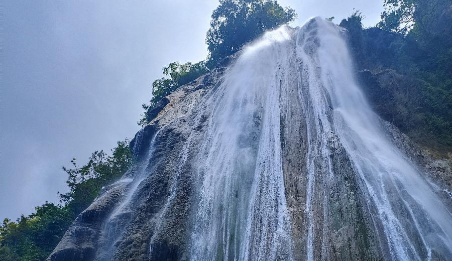
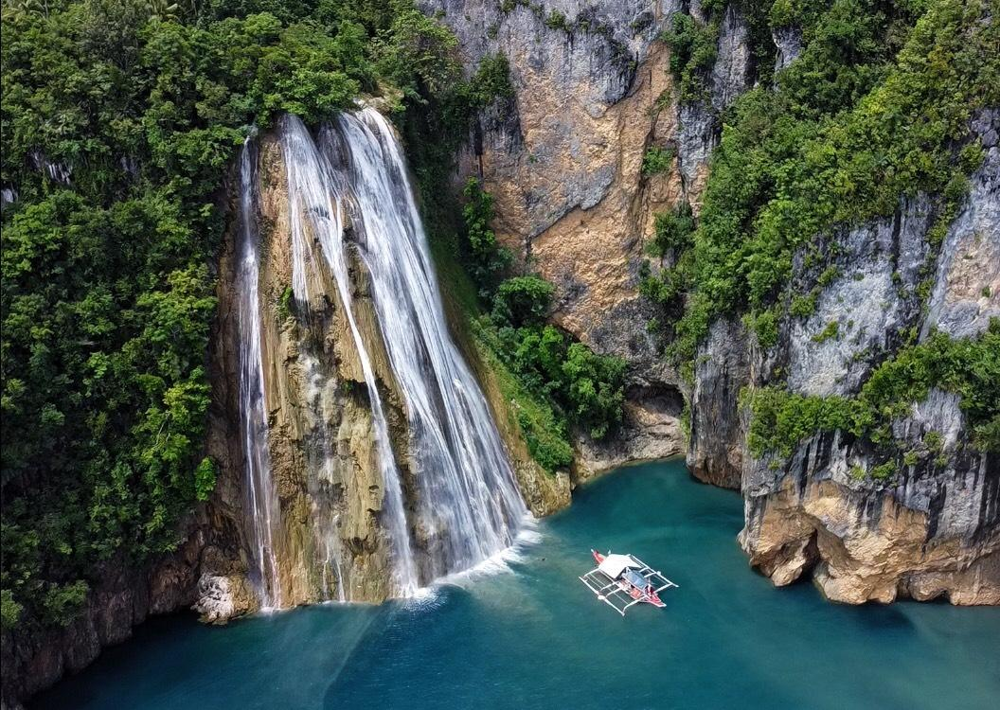

Catandayagan Falls is one of the most unique natural attractions in Masbate, famous for its waterfall that flows directly into the sea. The falls drop from a rocky cliff, creating a stunning and dramatic view that attracts many visitors. It is considered one of the most photographed spots in Masbate because of its rare beauty.

The surrounding area offers breathtaking coastal scenery and fresh ocean air. Visitors can enjoy sightseeing, taking photos, and exploring the nearby cliffs. With its one-of-a-kind landscape, Catandayagan Falls is a must-visit destination for nature lovers and adventurers.